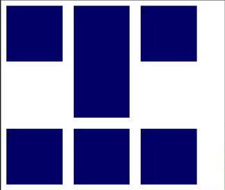
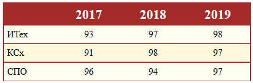

Лабораторная работа №2
Каскадные таблицы стилей
2.1 Цель работы
Изучить принципы встраивания каскадных таблиц стилей в документ, группирование и наследование селекторов. Рассмотреть блоковые и встроенные элементы, возможности их форматирования и способы позиционирования.
2.2 Методические указания
2.3 Описание лабораторной установки
Для выполнения лабораторной работы рекомендуется использовать следующее свободное программное обеспечение:
- редактор MS Visual Studio Code или текстовый редактор Notepad++, имеющий подсветку синтаксиса;
- браузер Mozilla Firefox или Google Chrome;
- СКВ Git (для работы с сервисом GitHub Pages потребуется доступ к сети Интернет);
- графический редактор GIMP (GNU Image Manipulation Program).
2.4 Порядок выполнения работы
- Создать простой HTML-документ с произвольным содержимым, как минимум, содержащий блочные элементы (они понадобятся для демонстрации стилей).
- Показать в созданном документе три способа использования каскадных таблиц стилей:
- inline-описание (используется атрибут style);
- с помощью контейнера <style> в секции заголовка;
- подключить стилевую таблицу, расположенную во внешнем файле;
- Используя селекторы CLASS и ID, показать использование стилей (например, для форматирование шрифта, текста, изменения фона документа и т.д.)
- Показать использование абсолютного и относительного позиционирования.
- Показать использование плавающей модели (свойство float).
- Добавить в документ элементы согласно варианту.
- Проверить отображение созданного документа в разных браузерах (при их наличии).
- Внести в проект указанные преподавателем изменения.
Задания для лабораторной являются индивидуальными. Возможно совместное выполнение в бригаде вариантов
всех ее участников. Номер варианта студента рассчитывается через остаток от деления его номера в журнале академгруппы на количество доступных вариантов. В данной лабораторной работе, номер своего варианта можно узнать как N%9, где N ‐ номер в журнале академической группы.
Отработка выставляется после совместной со студентом проверки работы проекта и получения преподавателем ссылки на GitHub/Bitbucket репозиторий проекта, выполненного в соответствии со всеми заданиями этого раздела.
2.5 Варианты заданий
- Добавить на страницу список флажков (checkbox), оформление которых зависит от их состояния.
Добавить на страницу контейнер с элементами, размещенными согласно рисунку. Использовать Flexbox.

- Добавить на страницу переключатели (radio), оформление которых зависит от их состояния.
Добавить на страницу контейнер с элементами, размещенными согласно рисунку. Использовать Flexbox, обратить внимание на порядок элементов.

- Добавить на страницу список с собственным маркером (изображение, символ или сгенерированное средствами CSS).
Добавить на страницу контейнер с элементами, размещенными согласно рисунку. Использовать Flexbox.

- Добавить на страницу форму, оформление полей которой зависит от корректности заполнения (valid/invalid) и обязательности.
- Добавить на страницу скрытый блок, который не будет изменять свою позицию при прокрутке страницы, и у которого видна лишь часть, по наведению на которую блок разворчаивается полностью. Пример на рисунке.

- Добавить на страницу раскрывающийся спойлер (accordion). Пример на рисунке.

- Добавить на страницу таблицу, оформленную согласно примеру.

- Добавить на страницу элемент, сдержащий переключаемые вкладки. Пример на рисунке.

- Добавить на страницу прыгающую кнопку. Пример на рисунке.

2.6 Содержание отчета
Отчет по лабораторной работе должен содержать: цель работы, вариант задания, эскиз макета страницы, исходный код, изображение полученного документа, выводы по работе. Для защиты наличие распечатанного отчета не является необходимым.
2.7 Контрольные вопросы
- Что такое каскадная таблица стилей?
- Для чего используется CSS?
- Назовите способы подключения CSS. Как различается их приоритет?
- В чем заключается каскадность таблиц стилей?
- Для чего прооизводится сброс стилей?
- Что такое селекторы? Виды селекторов.
- В чем разница между применением селекторов класса и селектора идентификатора?
- Какие требования к именованию классов?
- Можно ли указать несколько классов для одного и того же элемента?
- Для чего используются классы и псевдоклассы?
- Какие есть разновидности селектора атрибутов?
- Что такое псевдоэлементы?
- Опишите способы комбинирования селекторов. Приведите пример вложенного селектора.
- Какие существуют единицы измерения в CSS?
- Как осуществить задание цвета в CSS?
- Как указать ширину блочного элемента средствами CSS?
- Какие существуют директивы (@-правила) в CSS?
- В чем отличие директивы @media от применения аналогичного атрибута тега <link>?
- Каковы требования при использовании директивы @charset?
- Как подключить нестандартные шрифты?
- Для чего применяется директива @keyframes?
- Какие способы позиционирования элементов вы знаете? В чем различие между абсолютным и фиксированным позиционированием?
- Назначение свойства float.
- Какое свойство отвечает за внешний отступ у блочного элемента?
- Зачем указывать background-color, указав background-image?
- Какое значение имеет свойство background-color по умолчанию?
- Что такое спрайты?
- Для чего используется свойство border-top?
- Можно ли задать толщину для верхней, правой, нижней и левой границы блочного элемента, указав в свойстве border-width только три, а не четыре значения?
- С помощью какого свойства можно управлять величиной отступа первой строки блока текста?
- Значения свойства display. В чем различие между display: none; и visibility: hidden?
- Какие преимущества CSS Flexible Box Layout Module?
- Как, используя CSS FlexBox, указать направление главной оси?
- В чем отличие между свойствами align-content и align-items?
- Можно ли элемент флекс-контейнера самого сделать флекс-контейнером?
- Как проверить поддержку стилевого свойства браузерами?
- Назначение браузерных префиксов.
- Как определяются переменные в CSS?
- Для чего нужны CSS-препроцессоры?
СПИСОК ЛИТЕРАТУРЫ
- http://htmlbook.ru (оффлайн-версии справочника, 2011 г) и самоучителя)
- Брайан Хоган "HTML5 и CSS3. Веб-разработка по стандартам нового поколения". 2-е издание. Издательство: Питер, 2011 г.
- Бен Хеник, "HTML и CSS. Путь к совершенству", 2011 г.
- Джон Дакетт "Основы веб-программирования с использованием HTML, XHTML и CSS " 2-е издание. Издательство: Эксмо, 2010 г.
- http://www.postroika.ru/html
Вернуться к началу